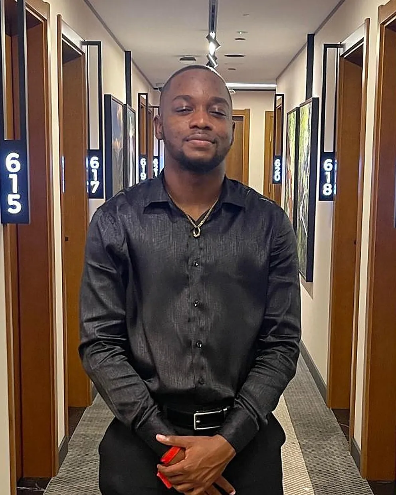

I build digital systems for Guyana's public sector and growing economy. Assistant ICT Engineer at the National Data Management Authority, and founder of AutoBid GY, the vehicle marketplace I built across mobile app, backend and web.
I build digital systems for Guyana, for its public sector and for its growing economy. At the National Data Management Authority that means the software behind national data services. At AutoBid GY, the company I founded, it means a marketplace where people across Guyana buy and sell vehicles. In both, I aim for the same result: systems that make complex processes simple, and that are reliable and easy to use.
My career began with internships at the Guyana Lands & Surveys Commission and the National Data Management Authority (NDMA). At NDMA I moved up to Associate Developer, building applications on the Frappe Framework (versions 13–15) and mobile apps with FlutterFlow, and contributing code through Git and GitLab. Since November 2025 I've been an Assistant ICT Engineer there, supporting national data systems and bringing AI tools and prompt engineering into my everyday work.
Alongside work, I'm completing a BSc in Information Technology, specialising in network administration and technology development, on the way to becoming a Senior ICT Engineer. I'm looking for a team where I can take on bigger technical challenges and keep growing.

Delon Pyle · GeorgetownMy path so far, from secondary school to Assistant ICT Engineer, and where I'm heading next: Senior ICT Engineer. Scroll to follow it.
Founded a mobile marketplace and auction platform for buying and selling vehicles in Guyana. Built the iOS and Android app, the backend and APIs, and the autobid.gy website.
See the project →Support and develop the systems behind Guyana's national data services, and use AI tools and prompt engineering in day-to-day engineering work.
Built business applications on the Frappe Framework (v13–15), including custom client scripts, and developed mobile apps with FlutterFlow. Worked in Python, JavaScript, HTML and CSS, contributing code through Git and GitLab.
Tested game builds for functionality and quality, checked the accuracy of in-game information, and stress-tested settings under varying load to catch bugs before release.
Built a school registration website on the Frappe low-code platform, and supported the fibre-optic team connecting government agencies — including fibre splicing and site visits.
Work-study attachment in the Information Systems Division (August – September 2022): managed IT inventory, troubleshot network issues, and repaired PCs and hardware.
Specialising in network administration and technology development. In progress.
Awarded by the Ministry of Education. Overall assessment: Pass with Credit (B+).
Five subjects passed (CXC, June 2020): Electronic Document Preparation & Management (I), Principles of Business (II), Physical Education & Sport (II), English A (III) and Social Studies (III).
Paste a job description, or just list what you're hiring for, and see how my experience lines up. Each match shows the evidence behind it, and anything I don't have yet is listed honestly.
A mobile marketplace and auction platform for buying and selling vehicles in Guyana — Find It · Love It · Buy It. Buyers browse dealer listings, search cars and heavy equipment, follow live auctions and message sellers directly, with pricing in GYD. I founded AutoBid and built the mobile app, the backend and APIs, and the website.
A student registration website I built on the Frappe low-code platform during my industrial attachment at the National Data Management Authority.
My portfolio: a fast static site with an interactive 3D skills network, a scroll-driven career journey, light and dark modes, and a resume that exports to PDF. Hosted on Cloudflare.
Hiring for an ICT or software role, or have a project in mind? Reach me directly below, or send a message.